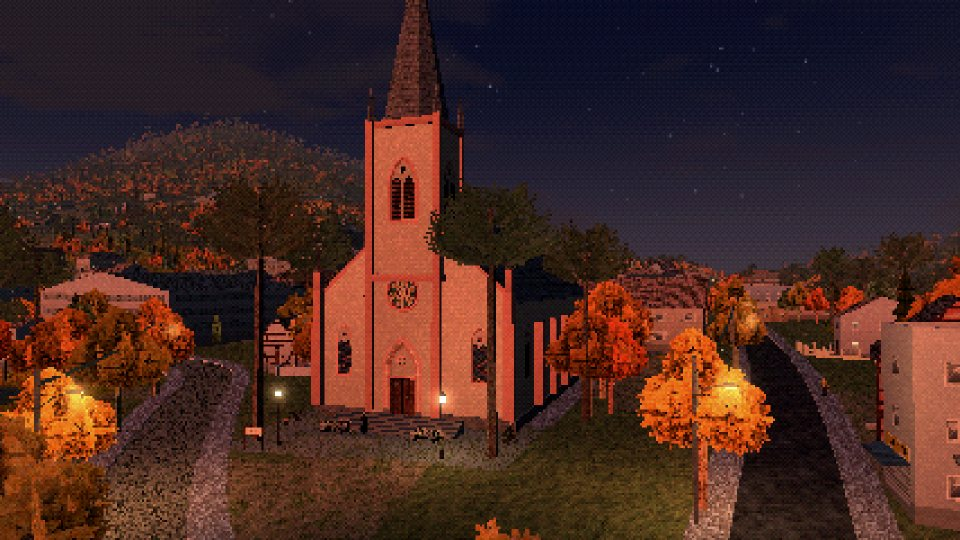
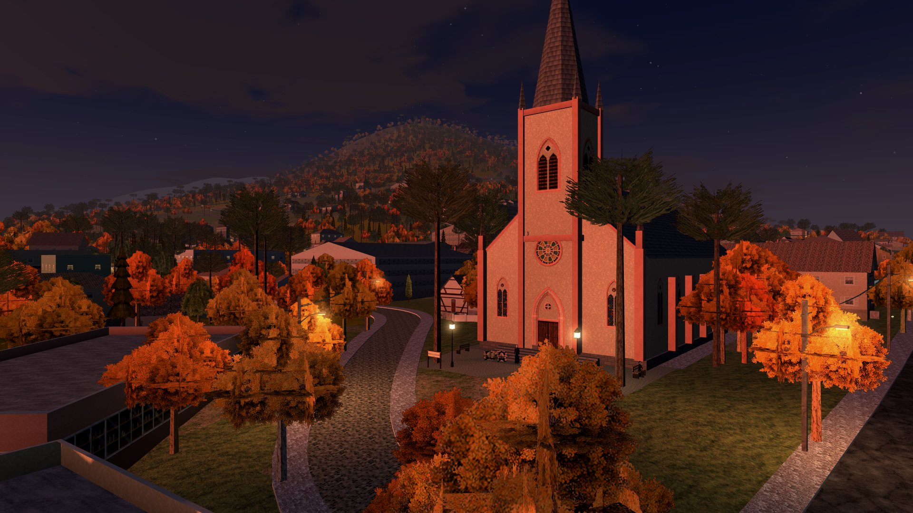
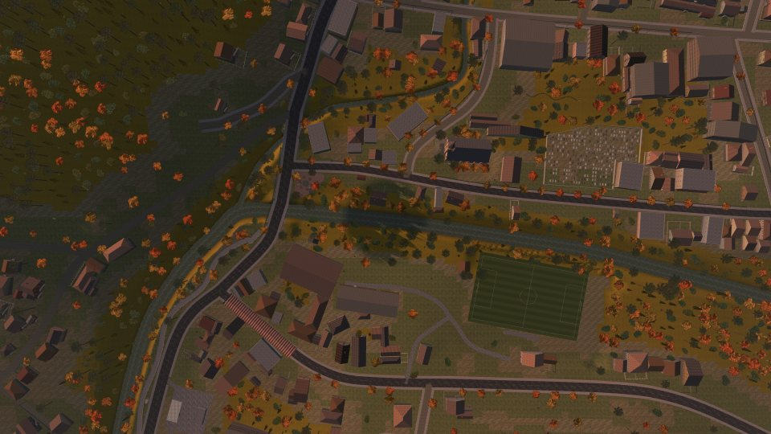
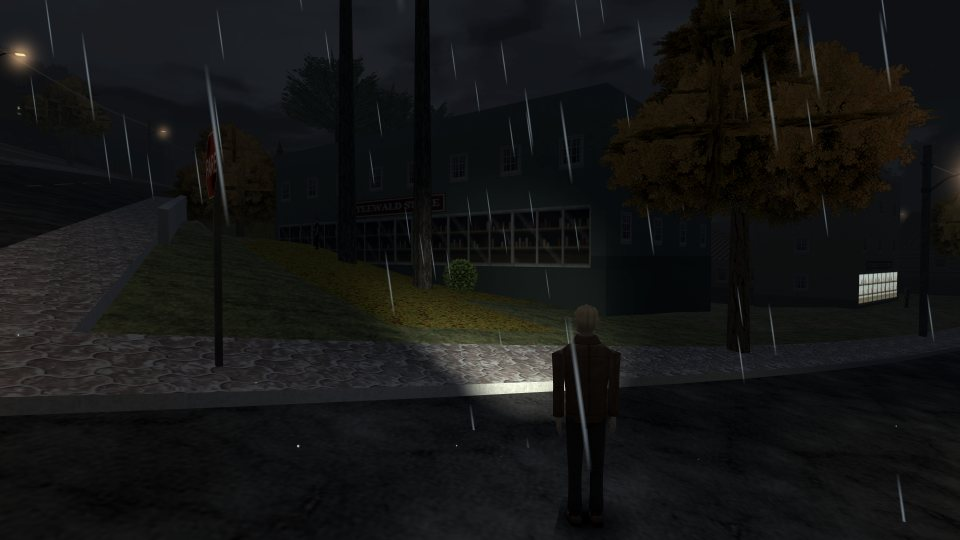
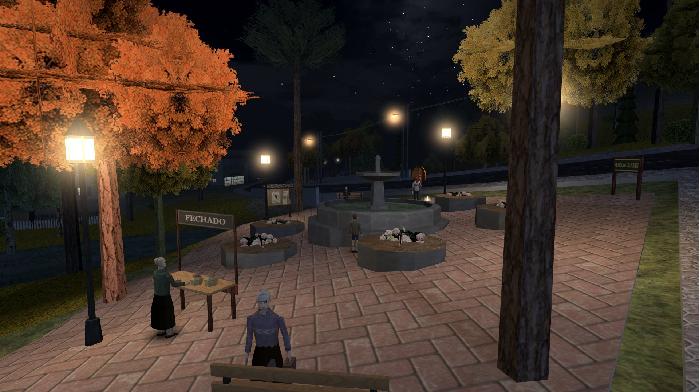
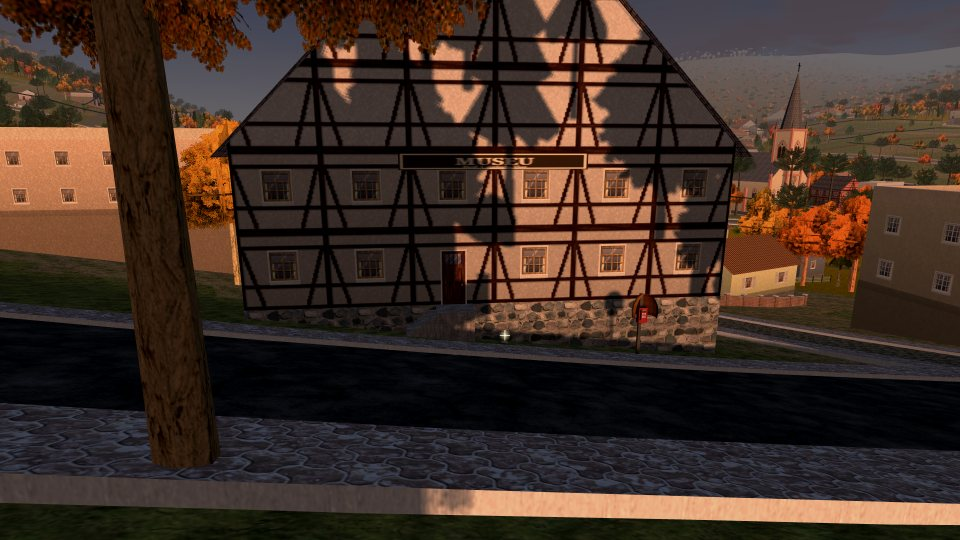
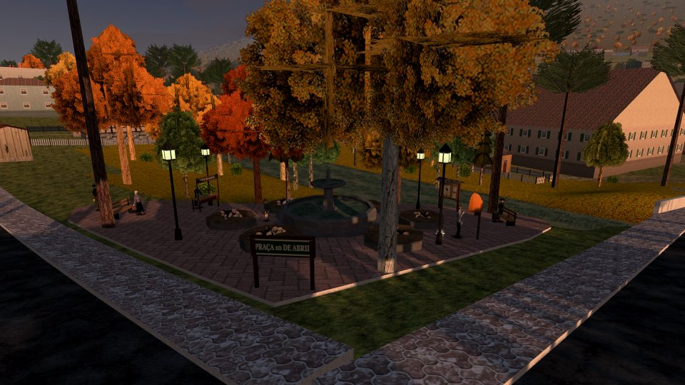
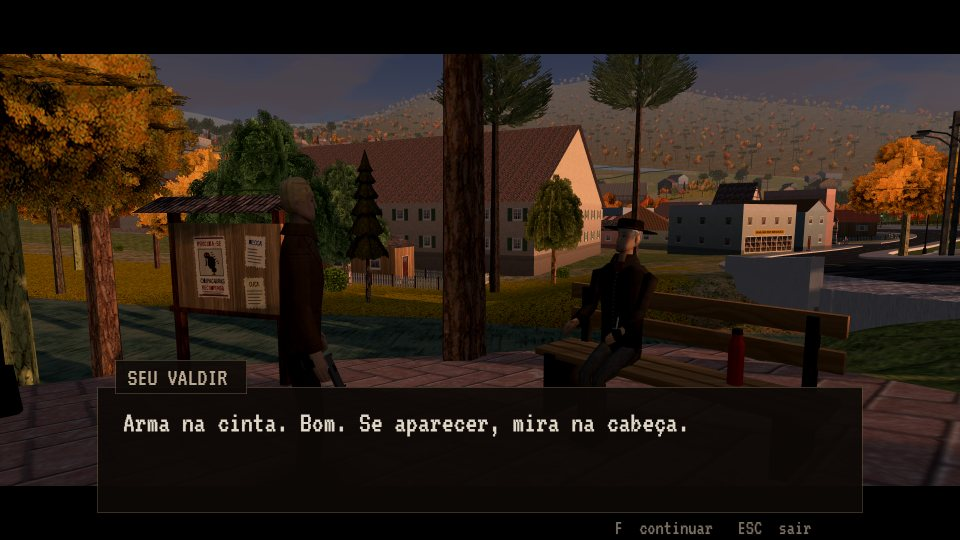

PS1 RETRÔ · 320×240Cara de PlayStation 1
Polígonos duros, texturas em pixel art e personagens montados como nos primeiros jogos 3D. Jogue no 3D LIMPO ou no PS1 RETRÔ, com dithering e cor de 15 bits de verdade.

Vale do Herval · Rio Grande do Sul · maio
Alguma coisa anda no mato.
Um survival horror em terceira pessoa com cara de PlayStation 1, numa cidadezinha de colonos alemães na serra gaúcha. A neblina não levanta, a criação aparece seca no potreiro e ninguém sai de casa depois que escurece. Menos você.
Grátis · no navegador · sem instalar nada
Cartaz na praça
Nas últimas noites, galinhas, patos e até ovelhas apareceram mortos em Teewald. Todos com dois furos no pescoço e sem uma gota de sangue.
A Prefeitura diz que é graxaim. A inspetoria veterinária fala em cachorro. A repórter que veio de Porto Alegre já contou onze casos em dez dias, e ninguém quer falar com ela.
Você não é daqui. Chegou numa tarde de neblina, pelo calçadão do Rio Cadeia, e resolveu ficar para descobrir o que anda no mato. A cidade não gosta de perguntas, mas cada morador sabe um pedaço da história.
Quando eu acendi a lanterna, os olhos brilharam vermelho. Aí sumiu no mato, aos pulos.
O que te espera
Câmera por cima do ombro, munição contada e uma cidade inteira para atravessar no escuro. Do jeito que os jogos de terror eram nos anos 90, só que no navegador.

PS1 RETRÔ · 320×240Polígonos duros, texturas em pixel art e personagens montados como nos primeiros jogos 3D. Jogue no 3D LIMPO ou no PS1 RETRÔ, com dithering e cor de 15 bits de verdade.

Mapa realRuas, rio, praça e morros de mapas reais, com cerca de 600 construções nos contornos de verdade.
Inventário que pausa o jogo, armas brancas que gastam e quebram, pedra para arremessar e cuca com chá de marcela para remendar a vida.
Doze capítulos, cada um com uma história que os mais velhos só contam baixinho, perto do fogão. Qual é qual, você descobre lá dentro.

A lanterna alcança poucos metros, e o som vem de todos os lados.
No PC, no celular ou no tablet, com teclado e mouse, controle ou toque. O progresso fica salvo sozinho no navegador.

Herval vem de erva-mate. Teewald, em hunsrik: mato do chá. Bonito, não é? Mas os antigos tinham outro respeito por esse mato. Ninguém entrava nele depois do sol posto.
Galeria
Mais de Teewald

Os colonos do Hunsrück, o mato do chá e as últimas semanas na Folha de Teewald.
Ler ▶
Do calçadão ao cemitério: os lugares onde ninguém fica depois das seis.
Andar ▶
Vinte e quatro moradores com medo, e cada um sabe um pedaço da história.
Conhecer ▶O ônibus para Novo Hamburgo não passa desde o meio-dia. Já que você vai ficar, fique de olho no mato.
▶ Jogar agora Grátis · PC, celular e controle